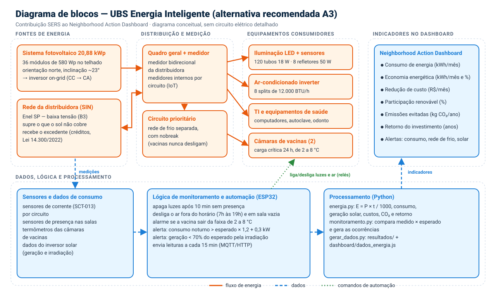

Indicadores de eficiência e sustentabilidade
Escolha a alternativa. Todos os números vêm de src/gerar_dados.py e mudam se as premissas mudarem.
Consumo por equipamento (kWh/mês)
E = (P × t) / 1000 × quantidade × dias. Situação atual comparada aos mesmos equipamentos depois das medidas de eficiência.
Comparação das alternativas — mesma necessidade, mês médio de um ano
A UBS precisa da mesma energia útil nas quatro situações. Coluna verde: alternativa recomendada.
Energia líquida da rede (kWh/mês)
Consumo menos geração solar (compensada).
Conta de energia (R$/mês)
Inclui Fio B não compensado e o mínimo de 100 kWh.
Viabilidade, impactos ambientais, benefícios e limitações
Mês a mês: consumo × geração solar ()
Climatização varia com a estação; geração segue a irradiação média de cada mês.
Monitoramento — semana simulada (, alternativa A3)
Leituras horárias simuladas com três falhas inseridas para testar a lógica de alertas.
Rede de frio — temperatura das vacinas (°C)
Faixa segura de 2 a 8 °C (área verde).
Ocorrências detectadas
Geradas pelas regras do bloco “Lógica de monitoramento”.
Saldo acumulado em 25 anos (R$)
Sem reajuste de tarifa (conservador), com degradação dos módulos, O&M e troca do inversor no ano 12.
Sensibilidade do retorno simples (anos)
O que acontece se uma premissa estiver errada.
Medidas de eficiência (A1)
Diagrama de funcionamento da solução
Fonte de energia → consumidores → sensores → lógica de automação → processamento → indicadores deste dashboard.

Premissas e fontes
Arquivo dados/premissas.json. Equipamentos e horários em dados/equipamentos.csv; irradiação em dados/clima_mensal.csv.